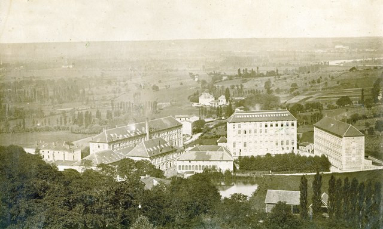

Maquette augmentée des Soieries Bonnet
Application de réalité augmentée pour le Musée des Soieries
Contexte du projet
Ce projet s'inscrit dans la continuité d'une application de réalité augmentée initialement développée pour le Musée des Soieries. L'objectif était de créer une version iOS native de cette application, permettant aux visiteurs d'explorer l'évolution historique du site et de ses bâtiments à travers une expérience immersive et interactive.
Réalisé en groupe de 3 personnes, ce projet a nécessité l'analyse de l'existant et la compréhension du fonctionnement de l'application actuelle afin de développer une solution compatible avec les attentes du musée et intégrant des améliorations adaptées.
Fonctionnalités principales
- Navigation entre différentes maquettes virtuelles des bâtiments à travers plusieurs époques
- Système interactif en réalité augmentée pour explorer les modèles 3D
- Informations complémentaires sur les transformations historiques du site
- Interface d'administration permettant au personnel du musée de modifier et d'ajouter du contenu
- Gestion optimisée des ressources pour une expérience fluide sur les appareils iOS
Technologies utilisées
| Technologie | Rôle |
|---|---|
| Swift | Langage de programmation utilisé pour développer des applications iOS |
| ARKit & RealityKit | Frameworks utilisés pour l'affichage en réalité augmentée sur iOS des modèles 3D interactifs |
| Node.js | Environnement d'exécution JavaScript pour la création d'un serveur backend contenant une API |
| Vue.js | Framework JavaScript pour la conception simplifiée de l'interface du site d'administration |
| GitHub | Gestionnaire de version pour l'archivage des versions et la conservation des modifications |
Modifications apportées
- Développement natif pour iOS : Création d'une application en Swift pour une intégration optimale avec l'écosystème Apple et utilisation de ARKit et RealityKit pour la gestion avancée de la réalité augmentée.
- Reproduction des fonctionnalités existantes : Adaptation de toutes les fonctionnalités utilisateur de l'application originale et gestion des projets et navigation en réalité augmentée.
- Amélioration de l'expérience utilisateur : Interface pensée pour iOS, avec des optimisations spécifiques aux interactions tactiles Apple et navigation fluide et intuitive.
- Optimisation des performances : Mise en place d'un système de cache pour optimiser le chargement des projets.
- Flexibilité et évolutivité : Structure modulaire pour faciliter l'ajout de nouvelles fonctionnalités.
Captures d'écran
Apprentissages et compétences développées
Ce projet a été une expérience enrichissante à plusieurs niveaux. C'était ma première fois à développer sur Mac et à apprendre Swift, ce qui m'a permis d'élargir mes compétences et d'aborder un nouvel écosystème de développement.
J'ai également pu mettre en pratique les connaissances acquises dans les matières mobiles (Kotlin et Flutter), notamment en ce qui concerne l'implémentation d'un design pattern (MVVM) et l'utilisation d'une API pour récupérer et gérer les données.
Concernant la 3D, c'était un domaine que j'avais déjà exploré en cours, notamment en Mathématiques et avec Unity, et j'ai trouvé intéressant de travailler plus en profondeur sur la gestion des modèles 3D et de leur intégration en réalité augmentée.
Enfin, le projet a été bien structuré grâce à une gestion de projet efficace et l'utilisation d'outils adaptés, comme Trello et Git. Cette bonne organisation nous a permis d'avancer efficacement et d'obtenir une application fonctionnelle.